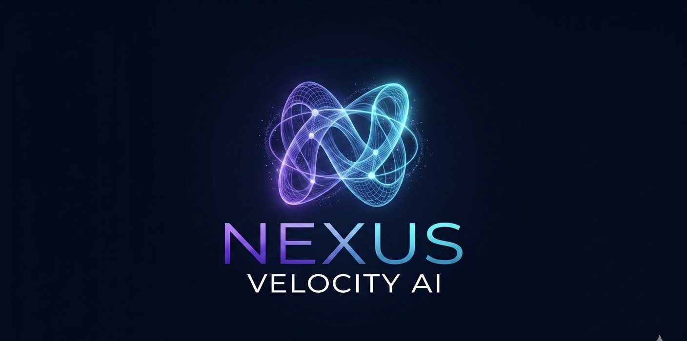

11 agentes
Cada uno con su política y su alcance, activados por fases.
Proyecto personal · en modo controlado
Orquestación multiagente con control humano
Una plataforma que coordina 11 agentes de IA con modelos locales, n8n y Docker, y que exige aprobación humana firmada antes de cualquier acción con efecto externo.

Nexus Velocity IA automatiza trabajo de negocio (análisis, redacción, validación, marketing, ventas, seguridad, auditoría) repartiéndolo entre agentes especializados. Corre en infraestructura propia, con modelos locales vía Ollama, para mantener los datos bajo control.
La idea central es sencilla: los agentes proponen, las personas aprueban.
Cada uno con su política y su alcance, activados por fases.
Componente determinista, sin LLM. Publicar, enviar o desplegar exige una aprobación humana firmada, de un solo uso y con caducidad.
Servicios internos solo en red local y acceso remoto con control de identidad. Todo falla cerrado.
Auditorías documentadas, copia previa y reversión de cada cambio, monitor de solo lectura y pruebas automatizadas.
Más detalle: arquitectura · seguridad · roadmap · uso.
Proyecto personal en modo controlado: la delegación a agentes y las integraciones externas están desactivadas por diseño hasta que se aprueben una a una. No es un servicio público ni tiene demo abierta, y no ha tenido una auditoría de terceros. Este sitio publica solo documentación; el código y los datos permanecen privados.
Busco apoyo para seguir desarrollando el proyecto: financiación, colaboración técnica, feedback o visibilidad. Todavía no hay una vía de pago pública; si quieres apoyar o colaborar, escríbeme y lo acordamos directamente.